Project 5 / Face Detection with a Sliding Window
Example of a face detection.
In this project, sliding window is implemented for face detection. As sliding window can be used in most object detection, it also works well in finding faces. The HOG (Histogram of Gradient) is used as representation of feature template, and then trained by SVM (Support Vector Machine) to locate faces in test images. Multi-scale sliding window and Hard Negative Mining are used to better the result. Mirror the HOG feature was also tried. The major steps involved can be seen as follow:
- Extract HOG from positive training images
- Extract HOG randomly from negative training images
- Train linear SVM classifier
- Retrain linear SVM using mined hard negatives
- Detect faces (multi-scale sliding window) and non maximum suppression
As for the global setting of parameters. The template size of one single subtracted feature is 36*36, cell size is 6*6, and the number of gradient cabin is default value - 31. Initial negative example number =20000. Apart from this, in multi-scale sliding window, the scale series used in imresize function is: [1,0.9,0.8,0.7,0.6,0.5,0.4,0.3,0.2,0.1,0.05]. Lambda in SVM is 0.0001 and stepsize of sliding window is cellsize. Step details and results are as follow:
Part 1. Extract HOG from positive training images
The positive training images are from Caltech faces, each with one or more faces. In HOG representation, the 36*36 pixel window are tiled into 6*6 pixel cells, and each cell represented by 31 orientation bins. Hence the feature vector dimension is (templatesize / cellsize).^2*31. Apart from this, I also tried to use mirror HOG based on original ones to form more positive samples. The details are shown as follow:
...
features_pos=zeros(2*num_images,(feature_params.template_size / feature_params.hog_cell_size)^2 * 31);
perm = vl_hog('permutation') ;
% accordingly rearranged orientation cabins
for i=1:1:num_images
IM=single(imread(image_files(i).name));
HOG1 = vl_hog(IM, feature_params.hog_cell_size);
%extract one initial hog feature from each image
features_pos(2*i-1,:)=reshape(HOG1,1,[]);
%apply mirrored hog to positive samples
HOG2 = HOG1(:,end:-1:1,perm);
%rearrange the hog1 to get flipped hog2
features_pos(2*i,:)=reshape(HOG2,1,[]);
end
...
Hog representation sample is in the format as follow (template hight * template width * number of radius cabin):
The accuracy difference between only using original HOG subtracted and adding flipped hog, can be seen as follow.
On the upper group is before application of flipped HOG feature when the other shows result after HOG mirror is used.
 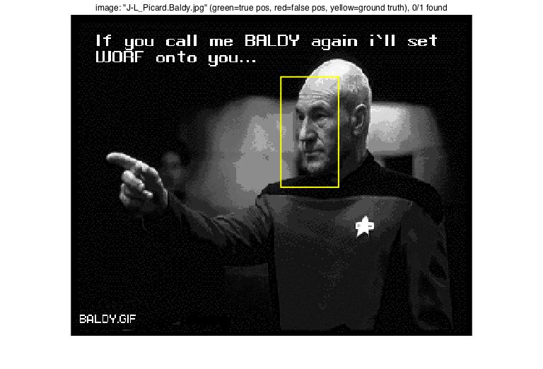
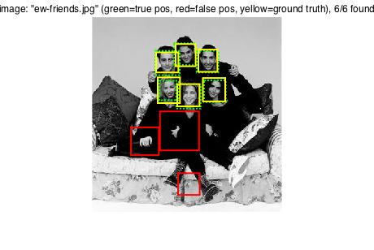
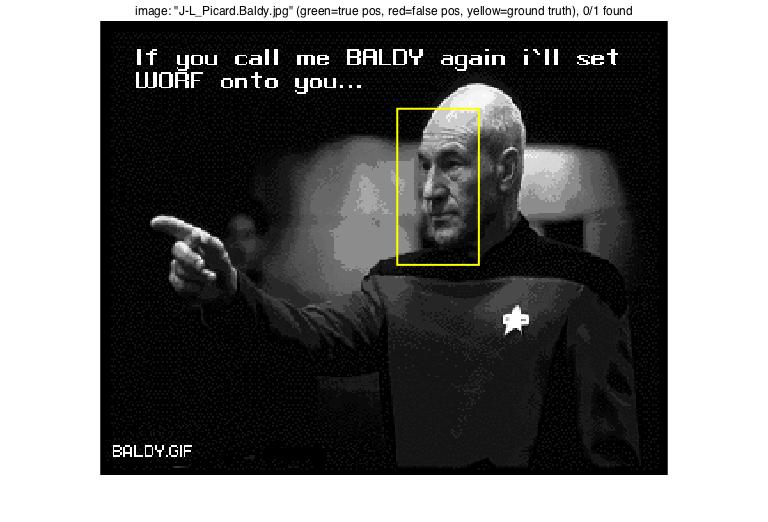
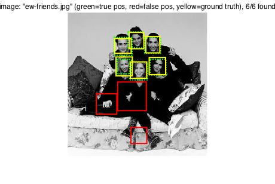
|
| 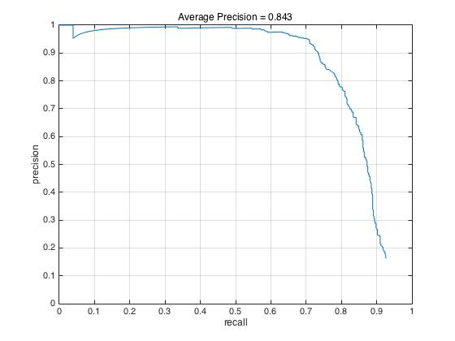 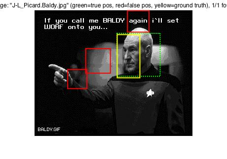 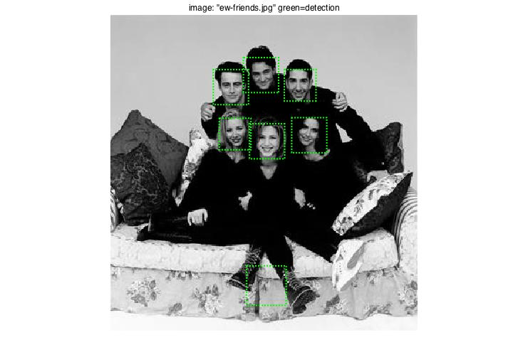 |
Hence, when mining hard negative is not used, using mirrored hog can help to promote accuracy. （from accuracy 77.1% to 84.3%）
Part 2 Extract HOG randomly from negative training images
The sampling of negative features is achieved by selecting random windows in non face images. By trying out different values, I found total number of these random HOG features can also vary the accuracy of detection, hence the total number of negative feature here is 20000. Main process is as follow:
...
for n = 1:num_images
img = im2single(rgb2gray(imread(strcat(non_face_scn_path, '/', image_files(n).name))));
[yran, xran] = size(img);
for s = 1:neg_per_img
% loop for each feature in current image
cx = ceil((xran-tempsize)*rand());
cy = ceil((yran-tempsize)*rand());
scope = img(cy:cy+tempsize-1, cx:cx+tempsize-1);
% a random fraction of current image
features_neg(((n-1)*neg_per_img + s),:) = reshape(vl_hog(scope, cellsize), 1, dimension);
end
end
...
Part 3 Train linear SVM classifier
There isn't a m file for this part, it is written in proj5.m. The positive HOG feature group and negative HOG feature group are given different label and trained in linear svm. This process can be the only training in the whole process or the initial training step before Mining Hard Negatives. (lambda = 0.0001 )
...
lambda = 0.0001; %%former 0.0001
feature = [features_pos; features_neg];
label = [ones(size(features_pos,1),1); -1*ones(size(features_neg,1),1)];
[w, b] = vl_svmtrain(feature', label, lambda);
...
Part 4 Retrain linear SVM using mined hard negatives
In this part, SVM trained result is applied to negative images and search for the windows with high confidence. The HOG representation of windows found in this way are added to the negative group. With the augmented negatives, the SVM is retrained. The Hard negative mining process is similar to final detecting process, the possible differences can be threshold value and the option to use non maximum suppression.
...
[hn_bboxes, hn_confidences, hn_image_ids] = run_detector_hn(non_face_scn_path, w, b, feature_params);
hn_thresh=0.9;
hn_num=size(hn_bboxes,2);
hn_index=find(hn_confidences>hn_thresh);
...
for k=1:1:length(hn_index)
...
yn=max(floor(hn_bboxes(k,2)),1);
yp=min(ceil(hn_bboxes(k,4)),hn_yran);
xn=max(floor(hn_bboxes(k,1)),1);
xp=min(ceil(hn_bboxes(k,3)),hn_xran);
hn_current = imresize(hn_image(yn:max(yp),xn:xp),[feature_params.template_size feature_params.template_size]);
hn_makeup =[hn_makeup; reshape(vl_hog(hn_current, feature_params.hog_cell_size), 1, dimension)];
end
...
feature_total = [features_pos; features_neg; hn_makeup];
label = [ones(size(features_pos,1),1); -1*ones(size(features_neg,1),1);-1*ones(size(hn_makeup,1),1)];
[wt, bt] = vl_svmtrain(feature_total', label, lambda);
...
The major variable is the threshold of confidence for searching hard negatives. Sometimes this process can lower the accuracy if the threshold is too stringent. The comparison between low threshold (around 0.75~0.8) and high threshold(0.9) can be seen as follow.
| 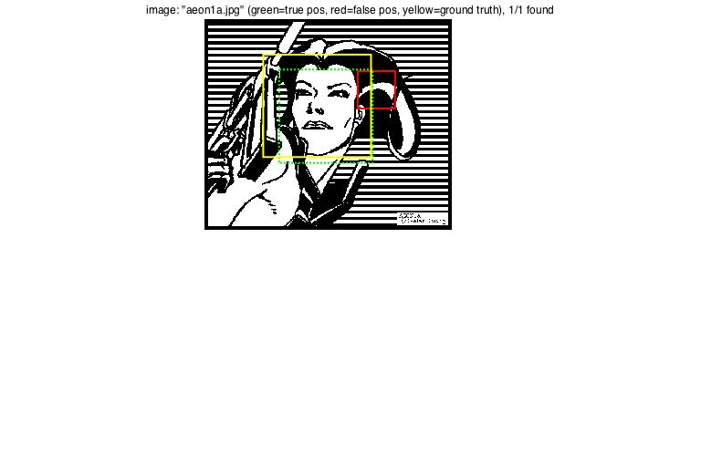 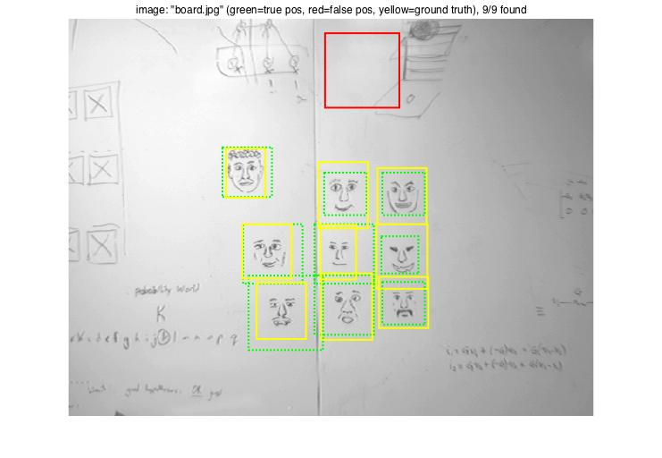 |
| 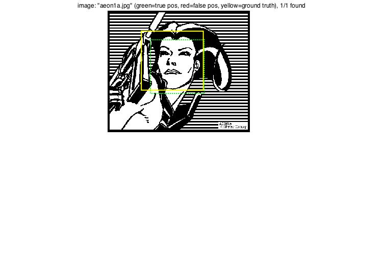 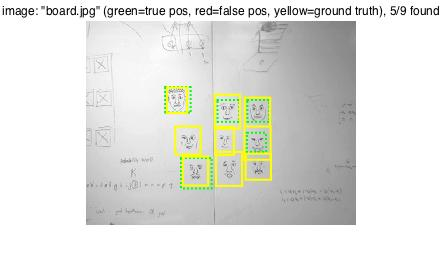 |
When more stringent (lower) value can help to eliminate the false detections in images with one face (or with faces stand out from background), it can lower the possibility to detect real faces in more complicated situations (when face feature varies greatly in one image causing confident value of real detection lower than false ones). Hence, only by setting appropriate threshold value in hard negative detection, the accuracy can be improved. As follows. (threshold = 0.825 for first line, threshold = 0.85 for the second line).
| 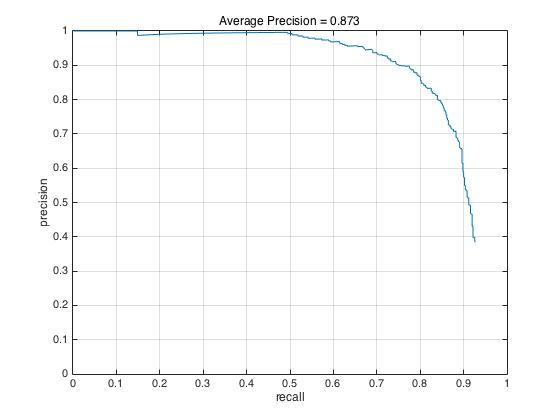 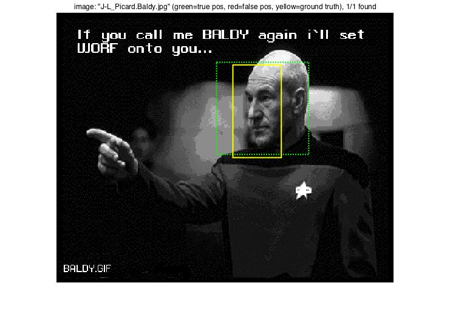 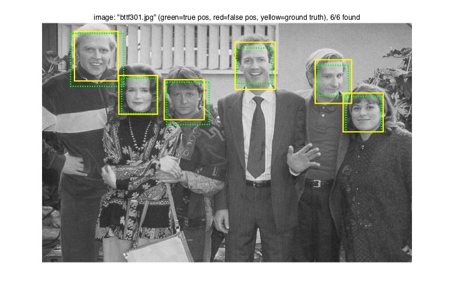 |
| 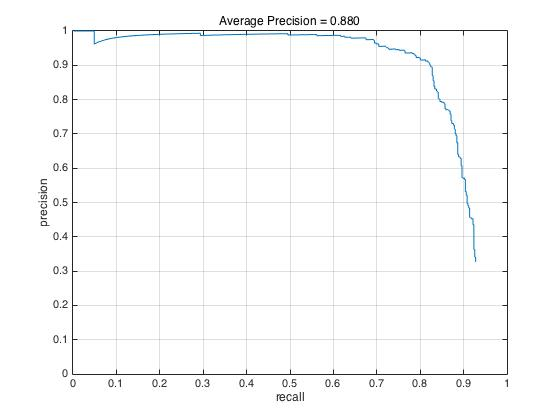 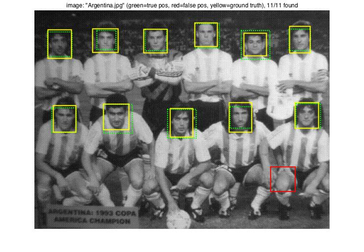 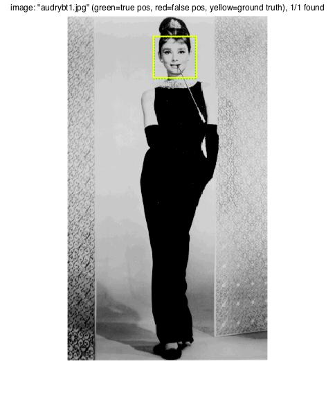 |
We can see from the above that, compared with the 84.3% of mirrored HOG feature (without considering hard negatives), the improvement to 88% means the space for hard negative mining can be limited in this case. As for the 77% of "non mirrored" HOG feature, the improvement to 87% is fundamental and obvious. Hence, if we take computing time into concern, perhaps mirroring and wrapping of positive feature can be of greater efficiency.
Part 5 Detect faces and non maximum suppression
After retraining SVM, the new set of coefficient w and b can be used to detect faces in basic and extra test images. The detection process is similar to finding hard negatives. The difference is that non maximum suppression is applied in this stage. Multi-scale sliding window also has the fixed set of scaling : scale=[1,0.9,0.8,0.7,0.6,0.5,0.4,0.3,0.2,0.1,0.05];and stepsize equals to cellsize: 6.
...
for i = 1:length(test_scenes)
...
for j=1:1:length(scale)
...
sy=size(IM,1);
sx=size(IM,2);
ny=floor(sy/cellsize);
nx=floor(sx/cellsize);
p=floor(tempsize/cellsize);
wx=nx-p+1;
wy=ny-p+1;
scale_fea_per_loop=zeros(wx*wy,(tempsize / cellsize)^2 * 31);
for x=1:1:wx
for y=1:1:wy
scale_fea_per_loop(wy*(x-1)+y,:)=reshape(Fea_per_scale(y:(y+tempsize/cellsize-1),x:(x+tempsize/cellsize-1),:),1,[]);
end
end
score_scale=scale_fea_per_loop*w+b;
index=find(score_scale>confident_thresh);
curscale_confidences = score_scale(index);
...
cur_bboxes = [cur_bboxes;[xmin,ymin,xmax,ymax]];
cur_confidences = [cur_confidences;curscale_confidences];
cur_image_ids= [cur_image_ids;label];
end
[is_maximum] = non_max_supr_bbox(cur_bboxes, cur_confidences, size(img));
...
end
...
Following is the detection result of extra pairs:
Mirror HOG applied Without hard negative mining:
| 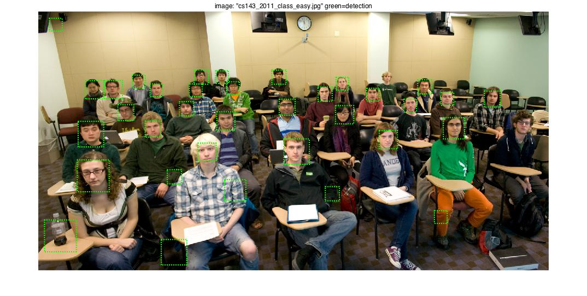 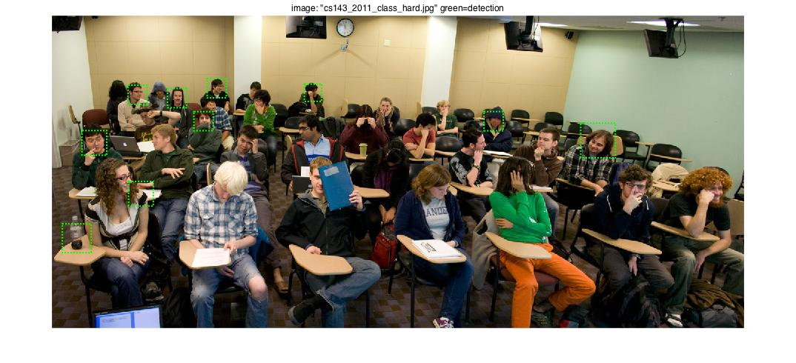 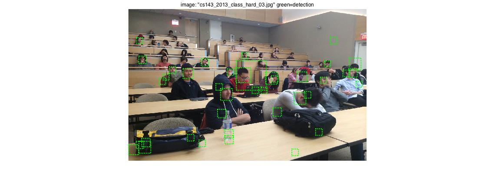 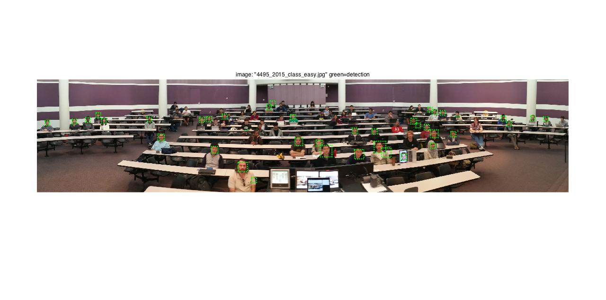 |
Mirror HOG applied With hard negative mining:
| 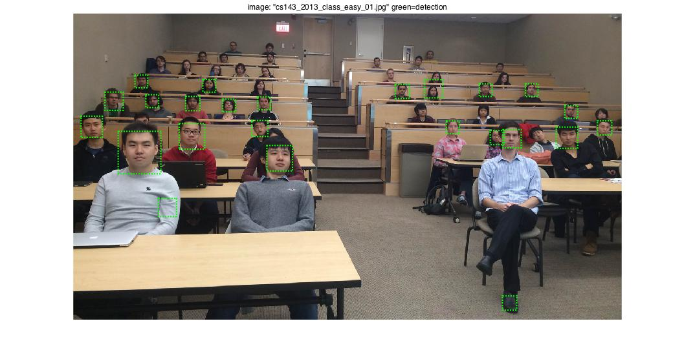 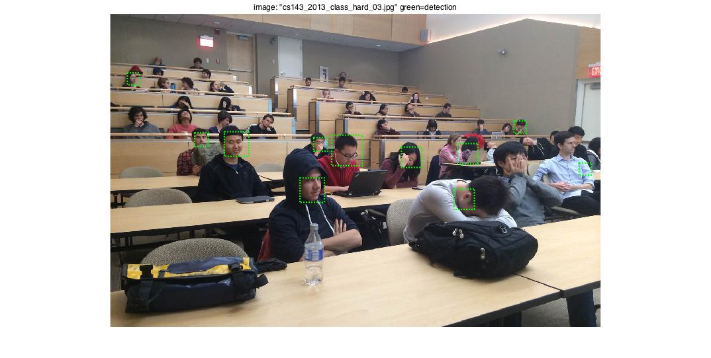 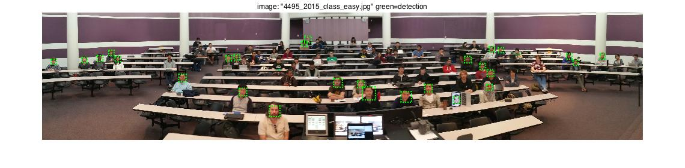 |
In conclusion, when the sampling of positive HOG feature(with the option to apply mirror results) and negative HOG feature(number of generated random windows) is the major factor influencing the level of accuracy. The setting of multi-scale sliding window and mining hard negative can help to better the results. Also, the value of detection threshold also influence the result, and value with good performance is between 0.75 and 0.85. The maximum accuracy I got is 88%, perhaps other techniques need to be include to elevate beyond 90%.